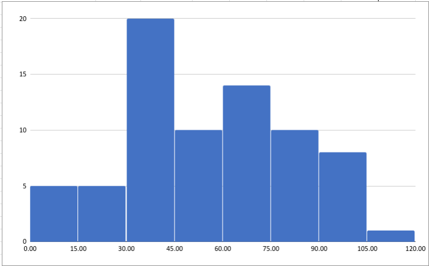
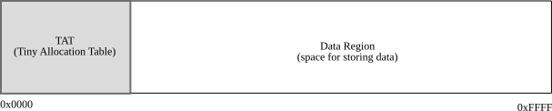
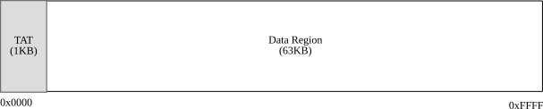
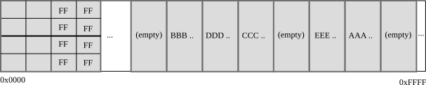
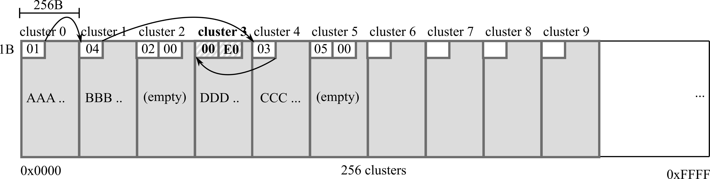

Taesoo Kim
Minions of Taesoo Kim

trait Summary {
fn summary(&self) -> String;
}
// A.
fn new_summary(option: u32) -> Summary { ... }
// B.
fn new_summary<T: Summary>(option: u32) -> T { ... }
// C.
fn new_summary(option: u32) -> &impl Summary { ... }
// D.
fn new_summary(option: u32) -> &dyn Summary { ... }
// E.
fn new_summary(option: u32) -> Box<dyn Summary> { ... }


